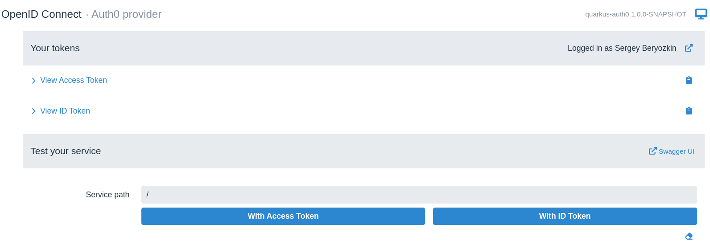

Auth0 OpenID Connectプロバイダーを使用したQuarkus Webアプリケーションの保護
Quarkus Security は、 quarkus-oidc エクステンションを使用して包括的な OpenId Connect (OIDC) および OAuth2 のサポートを提供し、認可コードフロー と ベアラートークン の認証メカニズムをサポートします。
Quarkusを使用すると、Keycloak、Okta、Auth0、およびその他の 有名なソーシャル OIDC や OAuth2 プロバイダー などの OIDC プロバイダーを簡単に設定できます。
Quarkus OpenID Connect エクステンション (quarkus-oidc) と Auth0 OIDC プロバイダーを使用して、API エンドポイントを保護する方法について説明します。
Auth0 アプリケーションの作成
Auth0 ダッシュボードに移動し、通常の Web アプリケーションを作成します。
例えば、 QuarkusAuth0 という Auth0 アプリケーションを作成します。
Auth0 アプリケーションは、クライアント ID、シークレット、HTTPS ベースのドメインを使用して作成されます。 次の手順で Quarkus 設定を完了するために必要となるため、これらのプロパティーをメモしておいてください。
次に、そのまま Auth0 ダッシュボードでアプリケーションにユーザーを追加します。
これで Auth0 アプリケーションの作成と設定が完了しました。次は、Quarkus エンドポイントの作成と設定を行います。 その後、Auth0 アプリケーションの設定と更新を行います。
Quarkus アプリケーションの作成
次の Maven コマンドを使用して、Quarkus OIDC エクステンションを使用して保護できる Quarkus REST (旧称 RESTEasy Reactive) アプリケーションを作成します。
Windowsユーザーの場合:
-
cmdを使用する場合、（バックスラッシュ
\を使用せず、すべてを同じ行に書かないでください）。 -
Powershellを使用する場合は、
-Dパラメータを二重引用符で囲んでください。例:"-DprojectArtifactId=quarkus-auth0"
アプリケーションワークスペースを作成し、お気に入りの IDE にインポートします。 ここでは、認証されたユーザーのみアクセス可能な Jakarta REST エンドポイントを追加します。
package org.acme;
import org.eclipse.microprofile.jwt.JsonWebToken;
import io.quarkus.oidc.IdToken;
import io.quarkus.security.Authenticated;
import jakarta.inject.Inject;
import jakarta.ws.rs.GET;
import jakarta.ws.rs.Path;
import jakarta.ws.rs.Produces;
import jakarta.ws.rs.core.MediaType;
@Path("/hello")
public class GreetingResource {
@Inject
@IdToken (1)
JsonWebToken idToken;
@GET
@Authenticated (2)
@Produces(MediaType.TEXT_PLAIN)
public String hello() {
return "Hello, " + idToken.getName();
}
}| 1 | 注入された JsonWebToken (JWT) Bean には @IdToken 修飾子があります。これは、アクセストークンではなく OIDC ID トークン であることを意味します。
IdToken は、OIDC 認可コードフローで認証された現行ユーザーに関する情報をクレームの形式で提供します。これらのクレームには、 JsonWebToken API を使用してアクセスできます。 |
| 2 | io.quarkus.security.Authenticated アノテーションが hello() メソッドに追加されました。これにより、認証されたユーザーのみアクセス可能になります。 |
|
認可コードフロー中に取得したアクセストークンは、ID トークンとともに直接エンドポイントにより使用されるのではなく、現在認証されているユーザーに代わってダウンストリームサービスにアクセスする場合にのみ使用されます。 アクセストークンについては、このチュートリアルの後半で詳しく説明します。 |
前の手順で作成した Auth0 アプリケーションのプロパティーを使用して、Quarkus の application.properties ファイルで OIDC を設定します。
# Make sure the application domain is prefixed with 'https://'
quarkus.oidc.auth-server-url=https://dev-3ve0cgn7.us.auth0.com
quarkus.oidc.application-type=web-app
quarkus.oidc.client-id=sKQu1dXjHB6r0sra0Y1YCqBZKWXqCkly
quarkus.oidc.credentials.secret=${client-secret}この手順を完了すると、Auth0 アプリケーションのドメイン、クライアント ID、シークレットを使用するように Quarkus が設定されます。
quarkus.oidc.application-type=web-app プロパティーを設定することで、OIDC 認可コードフローを使用するように Quarkus に指示が出されますが、他の方法を使用することもできます。これについてはチュートリアルの後半で説明します。
エンドポイントアドレスは http://localhost:8080/hello になります。これは、Auth0 アプリケーションで許可されたコールバック URL として登録する必要があります。
この手順を完了すると、ブラウザーから Quarkus http://localhost:8080/hello エンドポイントにアクセスすると、認証が完了した後に Auth0 によって同じアドレスにリダイレクトされます。
|
デフォルトでは、Quarkus は現在のリクエストパスをコールバックパスとして自動的に使用します。
ただし、Quarkus の ほとんどの実稼働環境では、アプリケーションの URL 空間が大きくなり、複数のエンドポイントアドレスが利用可能になります。 その場合は、次の設定例のように、専用のコールバック (リダイレクト) パスを設定し、この URL をプロバイダーのダッシュボードに登録できます。
この例では、Quarkus は Auth0 からのリダイレクトを受け入れ、認可コードフローを完了し、セッション Cookie を作成した後、 |
これで、エンドポイントのテストを開始する準備が完了しました。
Quarkus エンドポイントのテスト
Quarkus を開発モードで起動します。
$ mvn quarkus:dev|
このチュートリアルの中で、手動で Quarkus を開発モードで起動する必要があるのはこの手順のみです。 このチュートリアルの他のセクションでは、設定とコード更新の手順は Quarkus により自動的に監視および処理され、アプリケーションを手動で再起動する必要はありません。 |
ブラウザーを開き、 http://localhost:8080/hello にアクセスします。
Auth0 にリダイレクトされ、ログインするように求められます。
次に、 QuarkusAuth0 アプリケーションによるアカウントへのアクセスを認可します。
最後に、Quarkus エンドポイントにリダイレクトされ、次のレスポンスが返されます。
Hello, auth0|60e5a305e8da5a006aef5471
|
現行のユーザー名は返されないことに注意してください。 この動作が発生する理由は、"OpenID Connect (OIDC) の開発サービスと UI" ガイドの すべての OpenID Connect プロバイダーの Dev UI セクションと次のセクションで説明されているとおり、OIDC Dev UI を使用して確認できます。 |
OIDC Dev UI で Auth0 トークンを確認する
Quarkus は優れた Dev UI エクスペリエンスを提供します。
具体的には、Quarkus は、Keycloak コンテナーを使用して OIDC エンドポイントを開発およびテストするための組込サポートを提供します。
Quarkus の quarkus.oidc.auth-server-url 設定プロパティーに OIDC プロバイダーのアドレスが指定されていない場合、DevService for Keycloak が自動的に起動され、使用されます。
プロバイダーがすでに設定されている場合は、引き続き Quarkus OIDC Dev UI を使用できます。 設定を更新するには、次の手順を実行します。
まず、次のように Quarkus アプリケーションタイプを web-app から hybrid に変更します。
quarkus.oidc.auth-server-url=https://dev-3ve0cgn7.us.auth0.com
quarkus.oidc.application-type=hybrid (1)
quarkus.oidc.client-id=sKQu1dXjHB6r0sra0Y1YCqBZKWXqCkly
quarkus.oidc.credentials.secret=${client-secret}| 1 | 現在 OIDC Dev UI は、 SPA (シングルページアプリケーション) モードのみサポートしています。そのため、アプリケーションタイプは hybrid に変更されます。
OIDC Dev UI シングルページアプリケーションは、独自の Java Script を使用して、OIDC プロバイダーに対してユーザーを認証し、アクセストークンをベアラートークンとして使用して、Quarkus エンドポイントにサービスとしてアクセスします。 |
通常、Quarkus は ベアラー トークン認証をサポートするために quarkus.oidc.application-type=service で設定する必要がありますが、 hybrid アプリケーションタイプもサポートしているため、認可コードとベアラートークンの両方のフローを同時にサポートできます。
また、OIDC Dev UI へのコールバックを許可するように Auth0 アプリケーションを設定する必要もあります。 次の URL 形式を使用します。
-
この例では、
${provider -name}はauth0です
これでAuth0でOIDC Dev UIを使う準備ができました。
ブラウザセッションで http://localhost:8080/q/dev/ を開きます。以下のように、Auth0 プロバイダ SPA にリンクする OpenId Connect カードが表示されます：
Auth0 provider、Login into Single Page Application の順にクリックします。
ログインのために Auth0 にリダイレクトされます。 その後、次のように、OIDC Dev UI ダッシュボードにリダイレクトされます。
ここでは、エンコードおよびデコードされた ID トークンとアクセストークンを確認し、それをクリップボードにコピーしたり、サービスエンドポイントのテストに使用したりできます。後でエンドポイントをテストしますが、ここではまず ID トークンを確認します。
ご覧のとおりユーザー名を表すクレームはありませんが、 sub (subject) クレームを確認すると、その値が、ブラウザーから直接 Quarkus エンドポイントにアクセスした際にレスポンスとして取得した値 (auth0|60e5a305e8da5a006aef5471) と一致することがわかります。
これを修正するには、認証プロセス中に標準の OIDC profile スコープを要求するように Quarkus を設定します。これにより、ID トークンにさらに多くの情報が含まれるようになります。
quarkus.oidc.auth-server-url=https://dev-3ve0cgn7.us.auth0.com
quarkus.oidc.application-type=hybrid
quarkus.oidc.client-id=sKQu1dXjHB6r0sra0Y1YCqBZKWXqCkly
quarkus.oidc.credentials.secret=${client-secret}
quarkus.oidc.authentication.scopes=profile (1)| 1 | デフォルトの openid スコープに加え、 profile スコープを要求します。 |
http://localhost:8080/q/dev/ に戻り、 Auth0 へのログインプロセスを繰り返して ID トークンを再度確認すると、 name クレームを含む ID トークンが表示されるはずです。
ブラウザーから Quarkus エンドポイントに直接アクセスすると、名前が返されるはずです。しかし、ブラウザーの Cookie キャッシュをクリアして http://localhost:8080/hello にアクセスしても、再度 Hello, auth0|60e5a305e8da5a006aef5471 が返されます。何が間違っているのでしょうか?
答えは、 org.eclipse.microprofile.jwt.JsonWebToken#getName() 実装の詳細にあります。 MicroProfile MP JWT RBAC の仕様 によると、この実装は MP JWT 固有の upn クレームをチェックし、次に preferred_username を試行し、最後に sub を試行します。これが、ID トークンに name クレームが含まれていても、レスポンスとして Hello, auth0|60e5a305e8da5a006aef5471 が返される理由です。これは、エンドポイント hello() メソッドの実装を、特定のクレーム値を返すように変更することで、簡単に修正できます。
package org.acme;
import org.eclipse.microprofile.jwt.JsonWebToken;
import io.quarkus.oidc.IdToken;
import io.quarkus.security.Authenticated;
import jakarta.inject.Inject;
import jakarta.ws.rs.GET;
import jakarta.ws.rs.Path;
import jakarta.ws.rs.Produces;
import jakarta.ws.rs.core.MediaType;
@Path("/hello")
public class GreetingResource {
@Inject
@IdToken
JsonWebToken idToken;
@GET
@Authenticated
@Produces(MediaType.TEXT_PLAIN)
public String hello() {
return "Hello, " + idToken.getClaim("name");
}
}次にブラウザーのキャッシュをクリアして http://localhost:8080/hello にアクセスすると、ユーザー名が返されます。
ログアウトのサポート
Auth0を使用してQuarkusにサインインしたユーザーは、ユーザーによるログアウトをサポートしたいと思うでしょう。Quarkusでは、 ローカルセッションのログアウトだけでなく、RP-initiated Logoutやその他の標準的なOIDCログアウトメカニズム もサポートしています。
現在のところ、Auth0は標準化されたOIDC RP-initiated logoutをサポートしておらず、発見可能なメタデータにセッション終了エンドポイントURLを提供していないが、標準的なものとほぼ同じ動作をする独自のログアウトメカニズムを提供しています。
Quarkus OIDC を使用するとこれを簡単にサポートできます。Auth0 のセッション終了エンドポイント URL を設定し、Quarkus で、 client-id クエリーパラメーターとログアウト後の URL の両方を、 returnTo クエリーパラメーターとしてAuth0 への RRP-initated logoutリダイレクトリクエストに含める必要があります。
quarkus.oidc.auth-server-url=https://dev-3ve0cgn7.us.auth0.com
quarkus.oidc.application-type=hybrid
quarkus.oidc.client-id=sKQu1dXjHB6r0sra0Y1YCqBZKWXqCkly
quarkus.oidc.credentials.secret=${client-secret}
quarkus.oidc.authentication.scopes=openid,profile
quarkus.oidc.end-session-path=v2/logout (1)
quarkus.oidc.logout.post-logout-uri-param=returnTo (2)
quarkus.oidc.logout.extra-params.client_id=${quarkus.oidc.client-id} (3)
quarkus.oidc.logout.path=/logout (4)
quarkus.oidc.logout.post-logout-path=/hello/post-logout (5)
quarkus.http.auth.permission.authenticated.paths=/logout
quarkus.http.auth.permission.authenticated.policy=authenticated (6)| 1 | Auth0 はメタデータにセッション終了 URL を含めないため、Auth0 セッション終了エンドポイント URL を手動で設定して補完します。 |
| 2 | Auth0 は標準の post_logout_redirect_uri クエリーパラメーターを認識せず、代わりに returnTo パラメーターを期待します。 |
| 3 | Auth0 はログアウトリクエストで client-id を期待します。 |
| 4 | /logout パスへの認証済みリクエストは、RP 主導型ログアウトリクエストとして処理されます。 |
| 5 | これは、ログアウトしたユーザーが返されるパブリックリソースです。 |
| 6 | /logout パスが保護されているようにして下さい。 |
ここでは、Auth0 セッション終了エンドポイント URL をカスタマイズし、Quarkus に対して、 http://localhost:8080/logout リクエストが現在認証されているユーザーのログアウトをトリガーする必要があることを示しました。 /logout パスについては、それが virtual であり、JAX-RS エンドポイントのどのメソッドでもサポートされていないことに留意する必要があります。これが理由で、Quarkus OIDC が /logout リクエストに反応するためには、設定でこのパスに直接 authenticated HTTP セキュリティーポリシー をアタッチする必要があります。
また、ログアウトしたユーザーをパブリック /hello/post-logout リソースに返すように Quarkus を設定しました。このパスは、Auth0 固有の returnTo クエリーパラメーターとしてログアウトリクエストに含まれています。Quarkus アプリケーションの client-id もログアウト URL に含まれています。
ログアウト後のリダイレクトを受け入れるようにエンドポイントを更新します。
package org.acme;
import org.eclipse.microprofile.jwt.JsonWebToken;
import io.quarkus.oidc.IdToken;
import io.quarkus.security.Authenticated;
import jakarta.inject.Inject;
import jakarta.ws.rs.GET;
import jakarta.ws.rs.Path;
import jakarta.ws.rs.Produces;
import jakarta.ws.rs.core.MediaType;
@Path("/hello")
public class GreetingResource {
@Inject
@IdToken
JsonWebToken idToken;
@GET
@Authenticated
@Produces(MediaType.TEXT_PLAIN)
public String hello() {
return "Hello, " + idToken.getClaim("name");
}
@GET
@Path("post-logout")
@Produces(MediaType.TEXT_PLAIN)
public String postLogout() {
return "You were logged out";
}
}パブリック /hello/post-logout リソースメソッドが追加されたことに注意してください。
ログアウトをテストする前に、ユーザーがログアウトした後の Quarkus へのリダイレクトを許可するように、 Auth0 アプリケーションが設定されていることを確認します。
ここで、ブラウザーの Cookie キャッシュをクリアし、 http://localhost:8080/hello にアクセスし、Auth0 で Quarkus にログインしてユーザー名を取得し、 http://localhost:8080/logout に移動します。ブラウザーには、 You were logged out というメッセージが表示されます。
次に、 http://localhost:8080/q/dev/ に移動し、Dev UI SPA から Auth0 にログインします。 Logged in as Sergey Beryozkin というテキストの横に、ログアウトを表す記号が表示され、OIDC Dev UI からもログアウトが可能になったことがわかります。
OIDC DevUI からのログアウトが機能するためには、Auth0 アプリケーションの許可されたログアウトコールバックのリストを更新して、OIDC DevUI エンドポイントを含める必要があります。
次に、OIDC Dev UI から直接ログアウトし、新しいユーザーとしてログインします。必要に応じて、登録済みの Auth0 アプリケーションにさらにユーザーを追加します。
ロールベースのアクセスコントロール
Auth0 を使用して認証されたユーザーが Quarkus エンドポイントにアクセスできることを確認しました。
次の手順では、ロールベースのアクセス制御 (RBAC) を導入して、 admin など特定のロールを持つユーザーのみがエンドポイントにアクセスできるようにします。
以下の 権限ベースのアクセス制御 セクションも参照してください。
デフォルトで、Auth0 トークンにはロールを含むクレームは含まれていないため、まず、トークンにロールを追加するカスタムアクションを使用して、 Auth0 アプリケーションの Login フローをカスタマイズする必要があります。 Auth0 ダッシュボードで Actions/Flows/Login を選択し、 Add Action/Build Custom を選択し、 AddRoleClaim という名前を付けます。
そこに次のアクションスクリプトを追加します。
exports.onExecutePostLogin = async (event, api) => {
const namespace = 'https://quarkus-security.com';
if (event.authorization) {
api.idToken.setCustomClaim(`${namespace}/roles`, event.authorization.roles);
api.accessToken.setCustomClaim(`${namespace}/roles`, event.authorization.roles);
}
};カスタム Auth0 クレームは namespace で修飾される必要があるため、ロールを含むクレームの名前は https://quarkus-security.com/roles になります。前のセクションで分析した ID トークンのコンテンツを確認すると、このクレームがどのように表現されているかがわかります。以下はその例です。
{
"https://quarkus-security.com/roles": [
"admin"
]
}Auth0 ログインフロー図は次のようになります。
Auth0 アプリケーションに登録されているユーザーに、 admin などのロールを追加する必要があります。
admin ロールを作成します。
それを登録済みユーザーに追加します。
次に、Quarkus エンドポイントを更新して、 admin ロールを持つユーザーのみがエンドポイントにアクセスできるようにします。
package org.acme;
import org.eclipse.microprofile.jwt.JsonWebToken;
import io.quarkus.oidc.IdToken;
import jakarta.annotation.security.RolesAllowed;
import jakarta.inject.Inject;
import jakarta.ws.rs.GET;
import jakarta.ws.rs.Path;
import jakarta.ws.rs.Produces;
import jakarta.ws.rs.core.MediaType;
@Path("/hello")
public class GreetingResource {
@Inject
@IdToken
JsonWebToken idToken;
@GET
@RolesAllowed("admin")
@Produces(MediaType.TEXT_PLAIN)
public String hello() {
return "Hello, " + idToken.getClaim("name");
}
@GET
@Path("post-logout")
@Produces(MediaType.TEXT_PLAIN)
public String postLogout() {
return "You were logged out";
}
}http://localhost:8080/hello を開き、Auth0 に対して認証すると 403 が発生します。ここでは、Quarkus OIDC が Auth0 トークンのどのクレームがロール情報を表しているか認識していないため、 403 が発生します。デフォルトでは groups クレームがチェックされますが、ここでは Auth0 トークンに "https://quarkus-security.com/roles" クレームがあることが期待されます。
RBAC を適用するためにどのクレームをチェックする必要があるかを Quarkus OIDC に指示して修正します。
quarkus.oidc.auth-server-url=https://dev-3ve0cgn7.us.auth0.com
quarkus.oidc.application-type=hybrid
quarkus.oidc.authentication.scopes=profile
quarkus.oidc.client-id=sKQu1dXjHB6r0sra0Y1YCqBZKWXqCkly
quarkus.oidc.credentials.secret=${client-secret}
quarkus.oidc.roles.role-claim-path="https://quarkus-security.com/roles" (1)
# Logout
quarkus.oidc.end-session-path=v2/logout
quarkus.oidc.logout.post-logout-uri-param=returnTo
quarkus.oidc.logout.extra-params.client_id=${quarkus.oidc.client-id}
quarkus.oidc.logout.path=/logout
quarkus.oidc.logout.post-logout-path=/hello/post-logout
quarkus.http.auth.permission.authenticated.paths=/logout
quarkus.http.auth.permission.authenticated.policy=authenticated| 1 | カスタムロールクレームを指します。クレームは namespace で修飾されているため、ロールクレームへのパスは二重引用符で囲まれます。 |
ブラウザーの Cookie キャッシュをクリアし、再度 http://localhost:8080/hello にアクセスし、Auth0 に対して認証して期待されるユーザー名を取得します。
不透明 Auth0 アクセストークンを使用して Quarkus にアクセスする
|
このセクションでは主に、Auth0 JWT アクセストークンではなく、 Auth0 と Quarkus を設定して認可コードアクセストークンを JWT フォーマットで発行し、サービスエンドポイントに伝播させる方法の詳細は、アクセストークンのマイクロサービスへの伝搬 セクションとJWT形式のアクセストークン セクションを参照してください。 |
これまで、OIDC 認可コードフローを使用して Quarkus エンドポイントのみをテストしてきました。このフローでは、ブラウザーを使用して Quarkus エンドポイントにアクセスし、Quarkus 自体が認可コードフローを管理します。ユーザーは Auth0 にリダイレクトされてログインし、Quarkus に再度リダイレクトされます。その後 Quarkus が ID トークン、アクセストークン、およびリフレッシュトークンのコードを交換してフローを完了し、ユーザー認証の成功を表す ID トークンを処理します。この時点でアクセストークンは使用されません。前述のとおり、Quarkus が認可コードフローでアクセストークンを使用するのは、認証済の現行ユーザーに代わってダウンストリームサービスにアクセスする場合に限られます。
しかし、開発した Quarkus エンドポイントも ベアラー アクセストークンを受け入れる必要があると想像してみてください。このエンドポイントにそれを伝播している他の Quarkus エンドポイントかもしれませんし、アクセストークンを使用して Quarkus エンドポイントにアクセスする SPA かもしれません。その場合、すでに ID トークンの分析に使用した Quarkus OIDC DevUI SPA は、SPA が使用できるアクセストークンを使用して Quarkus エンドポイントをテストするのに最適です。
再度 http://localhost:8080/q/dev-ui にアクセスし、 OpenId Connect カードを選択して Auth0 にログインし、アクセストークンの内容を確認します。
このアクセストークンは、 JWS (署名済み) フォーマットではなく JWE (暗号化済み) フォーマットであるため、前述の ID トークンとは異なり Quarkus が直接検証することはできません。デコードされたトークンヘッダーを見ると、Auth0 のみが知る秘密鍵で直接暗号化されているため、Quakus はその内容を復号化できないことがわかります。このアクセストークンは Quarkus から見ると 不透明 であり、Quarkus は Auth0 の公開非対称検証キーを使用してこれを検証することはできません。
確認するには、 Test Service 領域の Service Address として /hello を入力して With Access Token を押すと、HTTP 401 ステータスが表示されます。
Quarkus がこのようなアクセストークンを受け入れるには、2 つのオプションのいずれかを使用できなければなりません。
最初のオプションは、プロバイダーのイントロスペクションエンドポイントを使用して、不透明トークンをリモートでイントロスペクトします。通常、トークンイントロスペクションは OAuth2 レベルでサポートされ、 OIDC は OAuth2 上に構築されているため、Keycloak などの一部の OIDC プロバイダーもトークンイントロスペクションをサポートします。ただし、Auth0 はトークンイントロスペクションをサポートしません。確認するには、公開されている Auth0 メタデータを確認し、設定済みの Auth0 プロバイダーのアドレスに /.well-known/openid-configuration を追加し、その結果として得られる URL https://dev-3ve0cgn7.us.auth0.com/.well-known/openid-configuration を開きます。これにより、Auth0 にイントロスペクションエンドポイントがないことがわかります。
この場合は、別のオプションを使用できます。つまり、アクセストークンを使用して Auth0 から UserInfo を取得し、間接的にアクセストークンを検証するというもう 1 つのオプションを使用して、不透明な Auth0 トークンを受け入れ、検証できます。OIDC プロバイダーは UserInfo を発行する前にアクセストークンを検証する必要があり、Auth0 には UserInfo エンドポイントがあるため、このオプションが機能します。
ここで、アクセストークンを使用して UserInfo を取得することでアクセストークンの検証行うことをリクエストするように、Quarkus を設定してみましょう。
quarkus.oidc.auth-server-url=https://dev-3ve0cgn7.us.auth0.com
quarkus.oidc.application-type=hybrid
quarkus.oidc.authentication.scopes=profile
quarkus.oidc.client-id=sKQu1dXjHB6r0sra0Y1YCqBZKWXqCkly
quarkus.oidc.credentials.secret=${client-secret}
# Point to the custom roles claim
quarkus.oidc.roles.role-claim-path="https://quarkus-security.com/roles"
# Logout
quarkus.oidc.end-session-path=v2/logout
quarkus.oidc.logout.post-logout-uri-param=returnTo
quarkus.oidc.logout.extra-params.client_id=${quarkus.oidc.client-id}
quarkus.oidc.logout.path=/logout
quarkus.oidc.logout.post-logout-path=/hello/post-logout
quarkus.http.auth.permission.authenticated.paths=/logout
quarkus.http.auth.permission.authenticated.policy=authenticated
quarkus.oidc.token.verify-access-token-with-user-info=true (1)| 1 | アクセストークンを使用して UserInfo をリクエストすることで、アクセストークンを間接的に検証します。 |
ID token ではなく UserInfo を期待するように、エンドポイントコードを更新します。
package org.acme;
import io.quarkus.oidc.UserInfo;
import jakarta.annotation.security.RolesAllowed;
import jakarta.inject.Inject;
import jakarta.ws.rs.GET;
import jakarta.ws.rs.Path;
import jakarta.ws.rs.Produces;
import jakarta.ws.rs.core.MediaType;
@Path("/hello")
public class GreetingResource {
@Inject
UserInfo userInfo;
@GET
@RolesAllowed("admin")
@Produces(MediaType.TEXT_PLAIN)
public String hello() {
return "Hello, " + userInfo.getName();
}
@GET
@Path("post-logout")
@Produces(MediaType.TEXT_PLAIN)
public String postLogout() {
return "You were logged out";
}
}このコードは、認可コードフローとベアラーアクセストークンフローの両方で機能するようになります。
アクセストークンを確認した OIDC Dev UI に移動し、 Test Service 領域の Service Address として /hello を入力し、 With Access Token を押すと 200 が返されます。
実際に動作することを確認するには、 @RolesAllowed("user") でのみ user ロールを許可するようにテストエンドポイントを更新します。その後、OIDC Dev UI からエンドポイントに再度アクセスすると、HTTP 403 エラーが発生します。コードを @RolesAllowed ("admin") に戻すと、HTTP 200 ステータスが再び表示されます。
不透明アクセストークンを間接的に検証する場合、それを使用して UserInfo をリクエストすると、Quarkus はロール情報のソースとして UserInfo を使用します (存在する場合)。その結果、Auth0 は UserInfo レスポンスに以前に作成されたカスタムロールクレームも含めます。
|
このセクションの冒頭で言及したとおり、このセクションの主な目的は、Quarkus による不透明アクセストークンの検証方法を説明することです。一般的には、フロントエンドの JAX-RS エンドポイントまたは SPA が UserInfo の取得を信頼できるサービスに委譲することを望まない限り、 Auth0 アクセストークンの推奨される使用方法については、次の アクセストークンのマイクロサービスへの伝搬 セクションとJWT形式のアクセストークン セクション を参照してください。 |
|
通常、リモートサービスにアクセスするにはアクセストークンを使用しますが、OIDC DevUI SPA ダッシュボードには ID トークンを使用してテストするオプションもあります。このオプションは、SPA がエンドポイントに委譲して、SPA が使用するために ID トークンからいくつかの情報を検証および取得するケースをエミュレートするためにのみ使用できます。その場合も、ID トークンは OIDC DevUI によってベアラートークンとしてエンドポイントに送信されます。ほとんどの場合は、アクセストークンを使用してテストすることが推奨されます。 |
|
テストするサービスパスを手動で入力する代わりに、OIDC DevUI の SwaggerUI または GraphQL を使用してサービスをテストできます。 たとえば以下をアプリケーションの pom に追加します。 OIDC Dev UI に Swagger リンクが表示されます。

Swagger リンクをクリックして、サービスのテストを開始します。 |
アクセストークンのマイクロサービスへの伝搬
OIDC 認可コードフローを使用し、ID トークンと UserInfo の両方を使用してユーザー情報にアクセスできるようになりました。一般的な次のタスクは、現在の Auth0 アクセストークンを伝播して、現行の認証済みユーザー代わってダウンストリームサービスにアクセスすることです。
実際、注入された UserInfo を示す最後のサンプルコードは、具体的なアクセストークンを伝播した例です。この場合、Quarkus は Auth0 アクセストークンを Auth0 UserInfo エンドポイントに伝播して UserInfo を取得します。Quarkus は、ユーザーが何もしなくてもこれを実行します。
しかし、アクセストークンを一部のカスタムサービスに伝播させる場合はどうでしょうか。Quarkus では、認可コードフローとベアラートークンフローの両方で非常に簡単にこれを実現できます。ベアラートークンアクセスを必要とするサービスを呼び出すための REST クライアントインターフェイスを作成し、それにアノテーション @AccessToken を付けるだけで、Auth0 ベアラーアクセストークンとしてフロントエンドエンドポイントに到着するアクセストークン、または Auth0 認可コードフローの完了後に Quarkus が取得したアクセストークンが、ターゲットマイクロサービスに伝播されます。これ以上簡単にはならないぐらい簡単です。
アクセストークンの伝播の例については、このチュートリアルの以下のセクションを参照してください。 トークンの伝播の詳細については、 OIDC トークンの伝播 を参照してください。
JWT形式のアクセストークン
Quarkus OIDC による 不透明 Auth0 アクセストークンを使用して Quarkus にアクセスする の処理方法を詳しく見てきました。しかし、UserInfo の確認以外の操作を現行の認証済みユーザーに代わって実行するマイクロサービスに、Auth0 の不透明トークンを伝播することは回避する必要があります。
フロントエンドの Quarkus アプリケーションが認可コードフローのアクセストークンを伝播してアクセスするマイクロサービスは、Auth0 ダッシュボードでは API として表されます。これを Applications/APIs に追加してみましょう。
作成された QuarkusAuth0API の https://quarkus-auth0 識別子は、この API の audience として機能します。Auth0 への認可コードフローリダイレクトでこのオーディエンスをクエリーパラメーターとして提供すると、Auth0 は必ず JWT フォーマットでアクセストークンを発行するようになります。
APIマイクロサービス
OIDC トークンの伝播と REST クライアントをサポートするために、以下の依存関係をプロジェクトに追加します：
<dependency>
<groupId>io.quarkus</groupId>
<artifactId>quarkus-rest-client-jackson</artifactId>
</dependency>
<dependency>
<groupId>io.quarkus</groupId>
<artifactId>quarkus-rest-client-oidc-token-propagation</artifactId>
</dependency>ApiEchoService サービスクラスを作成する：
package org.acme;
import io.quarkus.security.Authenticated;
import jakarta.ws.rs.POST;
import jakarta.ws.rs.Path;
import jakarta.ws.rs.Produces;
import jakarta.ws.rs.core.MediaType;
@Path("/echo")
public class ApiEchoService {
@POST
@Authenticated
@Produces(MediaType.TEXT_PLAIN)
public String echoUserName(String username) {
return username;
}
}これを、Auth0 から公開検証キーのみを取得する OIDC service アプリケーションとして設定します。
このマイクロサービスの設定は、次の 1 行のみとなるはずです。
quarkus.oidc.auth-server-url=https://dev-3ve0cgn7.us.auth0.comこれだけで、OIDC service アプリケーションは Auth0 公開検証キーを取得し、それを使用して JWT フォーマットの Auth0 アクセストークンを検証できます。
|
このチュートリアルでは、認可コードとベアラートークン認証フローの両方を処理できる OIDC
|
次に、 ApiEchoService を表す REST クライアントインターフェイスを追加します。
package org.acme;
import jakarta.ws.rs.POST;
import jakarta.ws.rs.Path;
import jakarta.ws.rs.Produces;
import jakarta.ws.rs.core.MediaType;
import org.eclipse.microprofile.rest.client.inject.RegisterRestClient;
import io.quarkus.oidc.token.propagation.common.AccessToken;
@RegisterRestClient
@AccessToken (1)
@Path("/echo")
public interface ApiEchoServiceClient {
@POST
@Produces(MediaType.TEXT_PLAIN)
String echoUserName(String username);
}| 1 | アクセストークンを HTTP Authorization: Bearer accesstoken ヘッダーとして伝播します。 |
さらに、前に作成した Quarkus フロントエンドアプリケーション GreetingResource の設定を更新して、認可コードフローの (ID トークンではなく) アクセストークンに ApiEchoService をターゲットとする aud (オーディエンス) クレームを組み込むようにリクエストし、 ApiEchoService REST クライアントのベース URL を設定します。
quarkus.oidc.auth-server-url=https://dev-3ve0cgn7.us.auth0.com
quarkus.oidc.application-type=hybrid
quarkus.oidc.authentication.scopes=profile
quarkus.oidc.authentication.extra-params.audience=https://quarkus-auth0 (1)
quarkus.oidc.client-id=sKQu1dXjHB6r0sra0Y1YCqBZKWXqCkly
quarkus.oidc.credentials.secret=${client-secret}
# Point to the custom roles claim
quarkus.oidc.roles.role-claim-path="https://quarkus-security.com/roles"
# Logout
quarkus.oidc.end-session-path=v2/logout
quarkus.oidc.logout.post-logout-uri-param=returnTo
quarkus.oidc.logout.extra-params.client_id=${quarkus.oidc.client-id}
quarkus.oidc.logout.path=/logout
quarkus.oidc.logout.post-logout-path=/hello/post-logout
quarkus.http.auth.permission.authenticated.paths=/logout
quarkus.http.auth.permission.authenticated.policy=authenticated
quarkus.oidc.token.verify-access-token-with-user-info=true
org.acme.ApiEchoServiceClient/mp-rest/url=http://localhost:${port} (2)
quarkus.test.integration-test-profile=test
%prod.port=8080
%dev.port=8080
%test.port=8081| 1 | Quarkus から Auth0 への認可コードフローのリダイレクト中に、追加の audience クエリーパラメーターを Auth0 認可エンドポイントに渡します。
これにより、アクセストークンが JWT フォーマットで発行され、 https://quarkus-auth0 を含む aud (オーディエンス) クレームが確実に組み込まれます。 |
| 2 | ApiEchoServiceClient が ApiEchoService エンドポイントを指すようにします。 org.acme.ApiEchoServiceClient/mp-rest/url=http://localhost:${port} プロパティーは、開発モード、テストモード、本番モードの使用中に正しい URL が構築されるようにパラメーター化されます。 |
最後に、 ApiEchoService がユーザー名をエコーするようにリクエストするように、 GreetingResource を更新します。
package org.acme;
import io.quarkus.oidc.UserInfo;
import io.quarkus.security.Authenticated;
import jakarta.annotation.security.RolesAllowed;
import jakarta.inject.Inject;
import jakarta.ws.rs.GET;
import jakarta.ws.rs.Path;
import jakarta.ws.rs.Produces;
import jakarta.ws.rs.core.MediaType;
import org.eclipse.microprofile.rest.client.inject.RestClient;
@Path("/hello")
public class GreetingResource {
@Inject
@RestClient
ApiEchoServiceClient echoClient; (1)
@Inject
UserInfo userInfo;
@GET
@RolesAllowed("admin")
@Produces(MediaType.TEXT_PLAIN)
public String hello() {
return "Hello, " + echoClient.echoUserName(userInfo.getName()); (2)
}
@GET
@Path("post-logout")
@Produces(MediaType.TEXT_PLAIN)
public String postLogout() {
return "You were logged out";
}
}| 1 | ApiEchoServiceClient REST クライアントを注入します。 |
| 2 | ApiEchoServiceClient を使用してユーザー名をエコーします。 |
ブラウザーを開いて http://localhost:8080/hello にアクセスし、ブラウザーに自分の名前を表示します。
http://localhost:8080/q/dev-ui に移動して OpenId Connect カードを選択し、Auth0 にログインし、アクセストークンの内容を確認します。
不透明 Auth0 アクセストークンを使用して Quarkus にアクセスする セクションに示されているとおりアクセストークンは暗号化されなくなり、JWT フォーマットになります。
権限ベースのアクセス制御
ロールベースのアクセスコントロール セクションでは、Quarkus でユーザーロールを含む namespace で修飾されたクレームをチェックする方法と、その情報を使用してロールベースのアクセス制御を適用する方法について説明しました。Auth0 はすでに、ID トークンとアクセストークンの両方にカスタムロールクレームを追加するように設定されています。
ただし、フロントエンドのエンドポイントからマイクロサービスにアクセストークンを伝播する場合は、権限ベースのアクセス制御が適しています。これは、ユーザーが特定のロールを持つことをトークンが保証するのではなく、特定のアクセストークンがこのサービスに対してそのアクションを実行するために承認されているか確認します。たとえば、管理者ロールを持つからといって、必ずしもそのユーザーがこのマイクロサービスのコンテンツの一部に対する読み取りおよび書き込みを許可されるわけではありません。
権限ベースのアクセス制御の制約を ApiEchoService に適用する方法を見てみましょう。
Auth0 ダッシュボードに移動し、 QuarkusAuth0API API に echo:name 権限を追加します。
echo:name 権限は、認可コードフロー中に標準 Oauth2 scope もリクエストされた場合、 echo:name 権限が標準の OAuth2 scope クレーム値としてアクセストークンに含まれます。次のように設定を更新します。
quarkus.oidc.auth-server-url=https://dev-3ve0cgn7.us.auth0.com
quarkus.oidc.application-type=hybrid
quarkus.oidc.authentication.scopes=profile,echo:name (1)
quarkus.oidc.authentication.extra-params.audience=https://quarkus-auth0
quarkus.oidc.client-id=sKQu1dXjHB6r0sra0Y1YCqBZKWXqCkly
quarkus.oidc.credentials.secret=${client-secret}
# Point to the custom roles claim
quarkus.oidc.roles.role-claim-path="https://quarkus-security.com/roles"
# Logout
quarkus.oidc.end-session-path=v2/logout
quarkus.oidc.logout.post-logout-uri-param=returnTo
quarkus.oidc.logout.extra-params.client_id=${quarkus.oidc.client-id}
quarkus.oidc.logout.path=/logout
quarkus.oidc.logout.post-logout-path=/hello/post-logout
quarkus.http.auth.permission.authenticated.paths=/logout
quarkus.http.auth.permission.authenticated.policy=authenticated
quarkus.oidc.token.verify-access-token-with-user-info=true
org.acme.ApiEchoServiceClient/mp-rest/url=http://localhost:8080| 1 | 認可コードフロー中に、追加の echo:name スコープがリクエストされます。 |
ここで、権限ベースのアクセス制御を適用するように、 ApiEchoService を更新します。
package org.acme;
import io.quarkus.security.PermissionsAllowed;
import jakarta.ws.rs.POST;
import jakarta.ws.rs.Path;
import jakarta.ws.rs.Produces;
import jakarta.ws.rs.core.MediaType;
@Path("/echo")
public class ApiEchoService {
@POST
@PermissionsAllowed("echo:name")
@Produces(MediaType.TEXT_PLAIN)
String echoUserName(String username) {
return username;
}
}以上を実行することで、Quarkus OIDC は scope クレーム値を現行のセキュリティーアイデンティティーの権限として自動的に関連付けます。
|
|
ブラウザーを開いて http://localhost:8080/hello にアクセスし、ブラウザーに表示される名前を取得します。
権限が正しく適用されていることを確認するには、これを echo.name: @PermissionsAllowed("echo.name") に変更します。ブラウザーのキャッシュをクリアし、 http://localhost:8080/hello に再度アクセスすると、 ApiEchoService によって 403 が報告されます。ここで、権限を @PermissionsAllowed ("echo:name") に戻します。
統合テスト
すでに OIDC DevUI SPA を使用して Auth0 にログインし、アクセストークンを使用して Quarkus エンドポイントをテストし、その過程でエンドポイントコードを更新しています。
しかし、テストの実行も重要です。ここでは、Quarkus 継続的テスト 機能を使用して、このチュートリアルを実施する中で開発したエンドポイントと設定をテストする方法を説明します。
次のテストコードから始めます。
package org.acme;
import io.quarkus.test.junit.QuarkusTest;
import org.junit.jupiter.api.Test;
import static io.restassured.RestAssured.given;
import static org.hamcrest.CoreMatchers.is;
@QuarkusTest
public class GreetingResourceTest {
@Test
public void testHelloEndpoint() {
given()
.when().get("/hello")
.then()
.statusCode(200)
.body(is("Hello, Sergey Beryozkin"));
}
}アプリケーションを開発モードで起動すると、CLI ウィンドウに次のように表示されます。
r を押すと、このテストが 403 で失敗していることがわかります。テストはエンドポイントにトークンを送信しないため、これは想定された結果です。
テストを修正する前に、OIDCによって保護されたQuarkusエンドポイントをテストするために利用可能なオプションを確認しましょう。これらのオプションは、アプリケーションがどのフローをサポートしているか、またどのようにテストを行うかによって異なります。OIDC 認証コードフローを使用するエンドポイントは、 これらのオプションのいずれか を使用してテストすることができ、ベアラートークン認証を使用するエンドポイントは、 これらのオプションのいずれか を使用してテストすることができます。
このように、Auth0 で保護されたエンドポイントは、 Wiremock または @TestSecurity アノテーションを使用してテストできます。このようなテストを自分で書いてみて、問題が発生した場合はご連絡ください。
ただしこのチュートリアルでは、最近追加された OidcTestClient を使用して、ライブ Auth0 開発テナントを使用するエンドポイントのテストをサポートします。
関連する設定フラグメントを次に示します。
quarkus.oidc.auth-server-url=https://dev-3ve0cgn7.us.auth0.com
quarkus.oidc.application-type=hybrid
quarkus.oidc.authentication.scopes=profile
quarkus.oidc.client-id=sKQu1dXjHB6r0sra0Y1YCqBZKWXqCkly
quarkus.oidc.credentials.secret=${client-secret}実稼働環境では、 %prod. および %test. 修飾子を使用して本番レベルとテストレベルの設定を区別します。ここでは、実際のアプリケーションで上記の設定が %test. から始まり、この設定に %prod. で修飾された Auth0 実稼働テナント設定が含まれると仮定します。
OidcTestClient を使用してこのような設定をテストするには、OAuth2 password または client_credentials グラントのいずれかを使用して、Auth0 開発テナントからトークンを取得する必要があります。ここでは password グラントを使用します。Auth0 ダッシュボードに登録されているアプリケーションが password グラントを許可していることを確認してください。
|
ここで明確にする必要があるのですが、実稼働環境で非推奨の OAuth2 |
OidcTestClient は、認可コードフローとベアラートークン認証の両方をサポートしているため、このチュートリアルで開発したエンドポイントで動作するベアラートークンを受け入れるアプリケーションのテストに使用する必要があります。認証コードフローのみをサポートする場合は、OIDC WireMock を使用するか、 を Auth0 dev テナントに対して直接使用する必要があります。後者の場合、 のテストコードを Auth0 がユーザーに認証情報の入力を要求する方法に合わせる必要があります。もしよろしければ、ドキュメントにある HtmlUnit HtmlUnit HtmlUnit テスト をコピーして試してみてください。
ここでは OidcTestClient を使用して、現時点で失敗しているテストを修正します。
まず、次の依存関係を追加する必要があります。
<dependency>
<groupId>io.quarkus</groupId>
<artifactId>quarkus-test-oidc-server</artifactId>
<scope>test</scope>
</dependency>testImplementation("io.quarkus:quarkus-test-oidc-server")これは、アクセストークンの取得テストに使用できるユーティリティークラス io.quarkus.test.oidc.client.OidcTestClient を提供します (この依存関係は OIDC WireMock サポートも提供しますので、必要に応じてドキュメントでテストに使用する方法を確認してください)。
次に、テストコードを以下のように更新します。
package org.acme;
import static io.restassured.RestAssured.given;
import static org.hamcrest.CoreMatchers.is;
import java.util.Map;
import org.junit.jupiter.api.AfterAll;
import org.junit.jupiter.api.Test;
import io.quarkus.test.junit.QuarkusTest;
import io.quarkus.test.oidc.client.OidcTestClient;
@QuarkusTest
public class GreetingResourceTest {
static OidcTestClient oidcTestClient = new OidcTestClient();
@AfterAll
public static void close() {
client.close();
}
@Test
public void testHelloEndpoint() {
given()
.auth().oauth2(getAccessToken(`sberyozkin@gmail.com`, "userpassword"))
.when().get("/hello")
.then()
.statusCode(200)
.body(is("Hello, Sergey Beryozkin"));
}
private String getAccessToken(String name, String secret) {
return oidcTestClient.getAccessToken(name, secret, (1)
Map.of("audience", "https://quarkus-auth0",
"scope", "openid profile"));
}
}| 1 | OidcTestClient は、登録済みユーザーの名前とパスワードのいずれかと、 audience および scope パラメーターを使用して、アクセストークンを取得するために使用されます。 |
OidcTestClient は、 Auth0 トークンのエンドポイントのアドレス、クライアント id、およびシークレットを検出します。
もう一度 r を押すと、テストが合格します。
ちなみに、必要に応じて DevUI から直接、連続モードでテストを実行することもできます。
プロダクションモード
Auth0 で保護された Quarkus エンドポイントを開発モードで開発およびテストしました。 次のステップでは、アプリケーションを本番モードで実行します。 JVM モードとネイティブモードを選択します。
JVMモードでアプリケーションを実行
アプリケーションをコンパイルします:
quarkus build./mvnw install./gradlew buildアプリケーションの実行:
java -jar target/quarkus-app/quarkus-run.jarブラウザーを開いて http://localhost:8080/hello にアクセスし、ブラウザーに表示される名前を取得します。
ネイティブ・モードでアプリケーションを実行
この同じデモを、変更を加えることなくネイティブモードにコンパイルできます。 つまり、実稼働環境に JVM をインストールする必要はありません。 ランタイムテクノロジーは生成されたバイナリーに組み込まれ、最小限のリソースで実行できるように最適化されています。
コンパイルには少し時間がかかるため、この手順はデフォルトで無効になっています。
native プロファイルを有効にして、アプリケーションを再度ビルドします。
quarkus build --native./mvnw install -Dnative./gradlew build -Dquarkus.native.enabled=true次に、以下のバイナリーを直接実行します。
./target/quarkus-auth0-1.0.0-SNAPSHOT-runnerブラウザーを開いて http://localhost:8080/hello にアクセスし、ブラウザーに表示される名前を取得します。
トラブルシューティング
このチュートリアルで説明された手順は、チュートリアルで説明されたとおりに動作するはずです。すでに認証を完了している場合は、更新後の Quarkus エンドポイントにアクセスする際にブラウザーの Cookie をクリアする必要があることもあります。開発モードで Quarkus アプリケーションを手動で再起動する必要がある可能性もありますが、これhら想定されていません。このチュートリアルを完了するのにサポートが必要な場合は、Quarkus チームにお問い合わせください。
まとめ
このチュートリアルでは、同じエンドポイントコードでサポートされている認可コードフローとベアラートークン認証フローを使用して、Quarkus エンドポイントを quarkus-oidc エクステンションと Auth0 で保護する方法を実演しました。
コードを 1 行も書くことなく、カスタム Auth0 ログアウトフローのサポートを追加し、namespace で修飾されたカスタム Auth0 クレームを使用してロールベースのアクセス制御を有効にしました。
マイクロサービス REST クライアントに @AccessToken アノテーションを追加することで、フロントエンドエンドポイントからマイクロサービスエンドポイントにトークンを伝播しました。
マイクロサービスエンドポイントは、 @PermissionsAllowed アノテーションを使用して権限ベースのアクセス制御を有効にしました。
Quarkus 開発モードを使用して、エンドポイントを再起動せずにコードと設定を更新し、OIDC Dev UI を使用して Auth0 トークンを視覚化およびテストしました。
Quarkus の継続的テスト機能を使用して、OIDC Dev UI テストをライブ Auth0 開発テナントに対する統合テストで補完しました。
最後に、アプリケーションを JVM モードとネイティブモードで実行しました。
楽しんで!